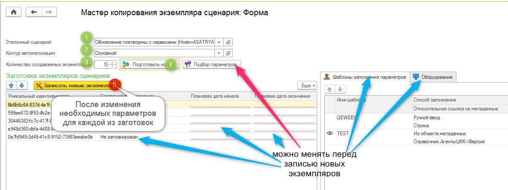

При массовом выполнении определенных задач администрирования не очень удобно создавать экземпляры сценариев по одному. Тем более, чаще всего они отличаются друг от друга незначительно.
Пример: обновление нескольких информационных баз (ИБ) на новую версию конфигурации. Обновление каждой ИБ – это отдельный экземпляр сценария, которые отличаются только реквизитами базы и агентом, который должен выполнить обновление.
Для быстрого создания большого количества однотипных сценариев используется «Мастер копирования экземпляра сценария».
Вызывается из формы списка справочника Экземпляры сценариев.
Также Мастер копирования можно открыть выбором соответствующего раздела в подменю «Сервис» подсистемы «Сценарии администрирования».
Мастер на основании выбранного экземпляра создает заданное количество его копий, параметры которых можно переопределить в процессе работы с мастером.
